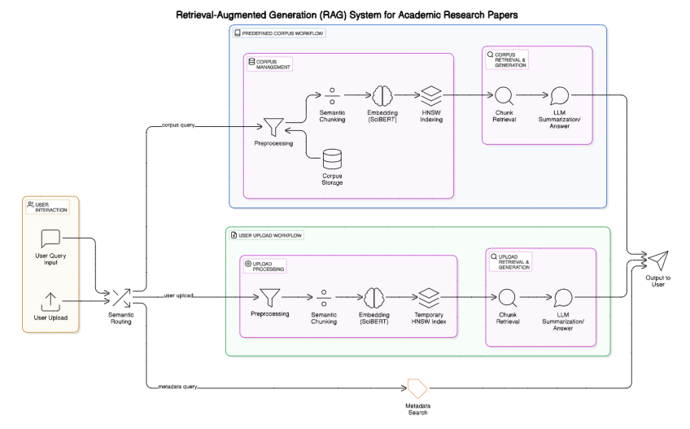

Retrieval-Augmented Generation (RAG) System for Academic Research Papers

Overview
This project creates an advanced Retrieval-Augmented Generation (RAG) system designed to work with academic research papers. The system is built to answer user queries in real time, making it highly efficient for academic research. It has two main modes of operation:
- Predefined Corpus Mode: The system works with a set of curated academic papers.
- User-Provided Papers Mode: Users can upload their own papers for immediate processing, embedding, and retrieval.
This flexibility allows the system to handle both pre-existing research collections and individual user-submitted documents. The system is built with several key components that work together seamlessly.
First, it starts with document preprocessing, where the paper's content is prepared for further analysis. Then, semantic chunking breaks the paper into smaller, meaningful sections, making it easier to process. The system then uses SciBERT, a model designed to understand academic language, to create embeddings (representations of the document's content). For quick retrieval of relevant information, the system uses FAISS with HNSW indexing, a method that ensures the system can find relevant content quickly. Finally, the system includes semantic routing, which helps it understand whether the user is asking about the content of the paper itself or the metadata (such as publication date or conference name).
User-Provided Papers Mode
The main goal of this system is to provide accurate answers to various user queries related to academic papers. These queries can range from asking for detailed explanations of concepts in the paper to searching for specific papers based on metadata (like papers published after a certain year). For example, a user might ask:
- “Can you explain this concept from the paper?”
- “Which papers published after 2024 discuss X?”
By handling both content-based and metadata-based queries, the system can meet a wide range of research needs.
Processing of Contents for the PDF Submitted by the User
When a user uploads a PDF, the system starts by preprocessing the document. It creates a .json file for each section of the paper. This is important because academic papers can have different structures, and this preprocessing ensures that the system understands each section properly.
After this, the text is tokenized (broken down into smaller parts) and passed through the embedding model to generate vectorized representations. These embeddings are what allow the system to understand the meaning of different sections of the paper and help it find relevant information when the user asks a question.
Processing of Metadata for the PDF Submitted by the User
Along with processing the paper's content, the system also needs to handle the metadata—the information that describes the paper, such as its title, authors, publication date, abstract, and keywords. This metadata allows the system to answer questions like:
- “Which papers were published after 2024?”
- “Which papers were presented at a particular conference?”
The system extracts this metadata by identifying key details such as the file name, title, author(s), publication year, abstract, and keywords.
However, there is a challenge when dealing with metadata: it is often presented in different formats across various papers. For example, dates might be in a format like yyyymmddhhmmss (e.g., 20170428001908), which needs to be converted into a standard format, like 2017-04-28T00:19:08+00:00. This conversion ensures that the date can be uniformly processed and used for queries.
Because research papers come from many different sources, there is no fixed format for metadata. This means the system must be flexible enough to handle various ways that metadata might be formatted. For example, conference names, locations, or dates might be listed in different ways, so the system needs special rules to accurately extract and index that information.